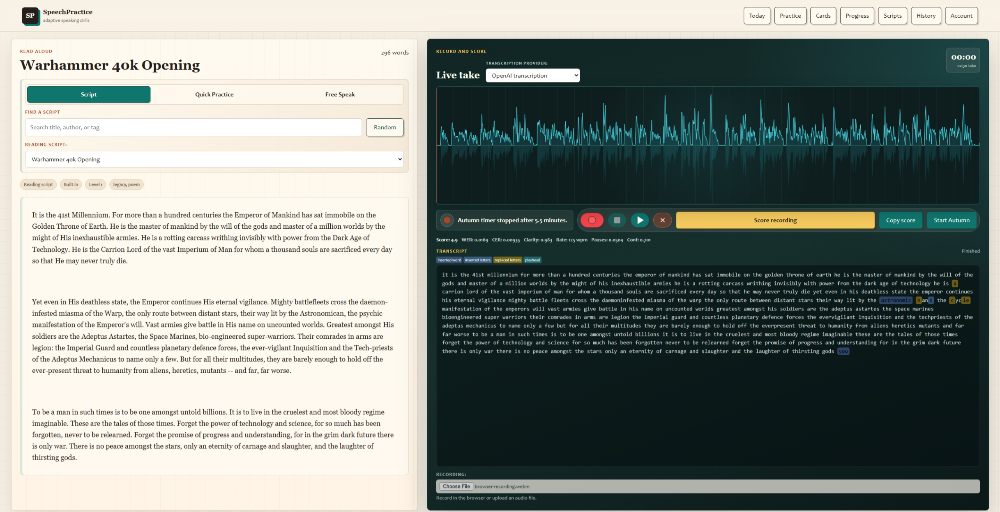
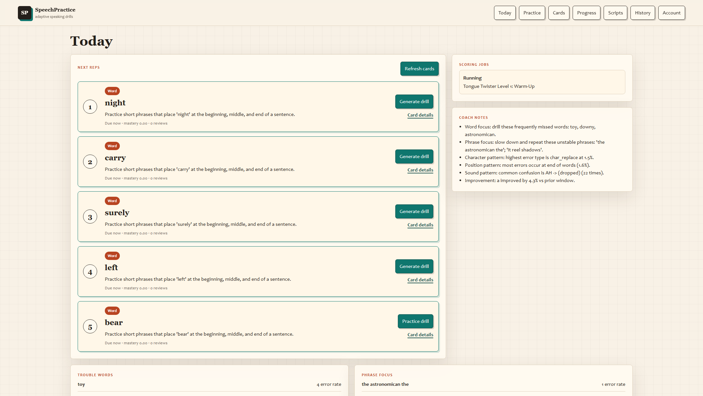
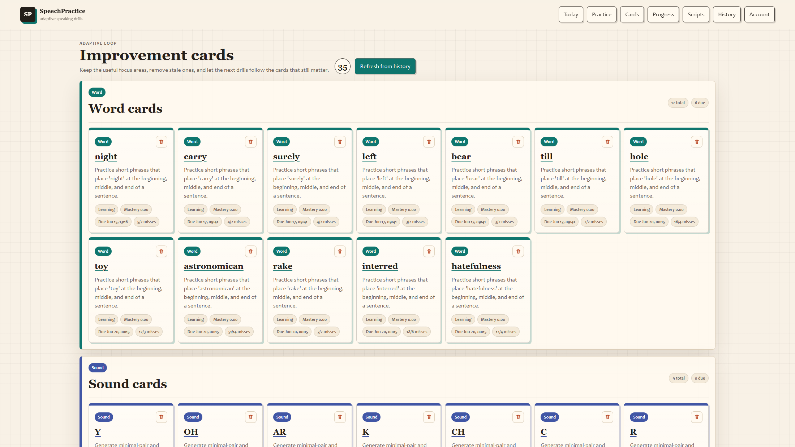
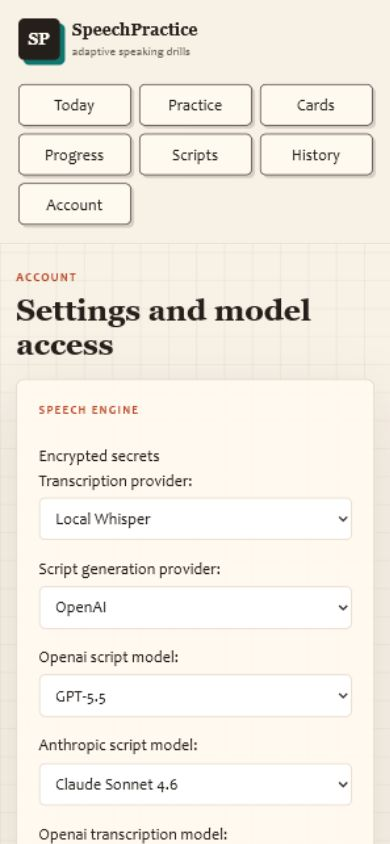

The split Practice bench, warm paper surface, dark recorder panel, teal accent system, and transcript-as-instrument feel.
Design Direction
Information hierarchy on dense pages. Settings, Cards, and Today repeat the same card language without enough scan-level grouping.
Lean harder into “practice bench” UI: make recording state, scoring state, and next drill state feel like calibrated controls rather than generic forms.
Priority Plan
Empty recorder state competes with enabled scoring
The visual state says “Waiting for audio,” but “Score recording” remains prominent and enabled. That invites a dead-end click.
- Disable scoring until a recording or upload exists.
- Use one clear empty-state action: record, upload, or choose demo transcript.
- Show a compact reason near disabled controls instead of relying on button opacity.
Settings page is a long undifferentiated control wall
Provider, Whisper tuning, Codex, and API key settings are all legitimate, but the page reads as one dense configuration surface, especially on mobile.
- Split into tabs or anchored sections: Speech engine, Local Whisper, Connections, Secrets, Timer.
- Collapse advanced Whisper parameters behind the preset controls.
- Make connected/disconnected status visible before credential forms.
Smaller screens look bad enough to deserve a dedicated pass
At 390px wide, the header becomes a seven-button grid before the task content. Practice avoids horizontal overflow, but the page feels cramped, the recorder appears before the script, and Account starts with heavy navigation followed by a long control wall.
- Use a compact horizontal nav scroller or a menu button below 760px.
- Keep Today and Practice immediately reachable.
- Recompose Practice mobile around one task at a time: read, record, review.
- Preserve visible focus states for keyboard and touch users.
Next reps are clear, but supporting insight feels bolted on
The queue is strong. Coach notes, trouble words, phrase focus, and job status feel like separate panels rather than a single “what should I do now?” story.
- Promote one recommended action at the top: due drill, retry job, or review phrase.
- Merge coach notes into a small “why this is next” line per due card where possible.
- Move secondary analytics below the fold or into Progress.
Card management has too many equally loud actions
The Cards page carries real adaptive value, but repeated Generate, Practice, Details, and delete controls create a busy management dashboard.
- Give each card one primary action based on status.
- Move destructive and administrative actions into a secondary menu.
- Add quick filters for due, weak, generated, and stale cards.
Progress filters expose raw script naming
The script select includes imported filenames, generated ladder names, Free Speak, and duplicates. That is accurate but not friendly.
- Group options by Built-in, Uploaded, Generated, and Free Speak.
- Normalize display names while preserving exact stored names in exports.
- Add a “recently practiced” shortcut before the full list.
Screenshot reproducibility is weak while Practice randomizes scripts
Fresh Practice loads pick different reading scripts, so docs and visual review screenshots are not naturally repeatable.
- Add a documented screenshot URL with a fixed script query.
- Seed a small demo session for polished transcript and waveform captures.
- Keep the browser-captured assets refreshed after major UI changes.
Evidence




Captured Files
docs/assets/speechpractice-practice-scored-wide.png
docs/assets/speechpractice-practice-wide.png
docs/assets/speechpractice-practice-mobile.png
docs/assets/speechpractice-account-mobile.png
docs/assets/speechpractice-today-wide.png
docs/assets/speechpractice-cards-wide.png
docs/assets/speechpractice-progress-wide.png
docs/assets/speechpractice-tour.gif